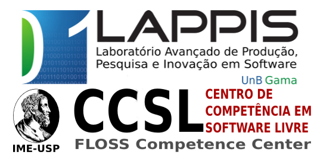
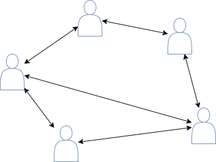
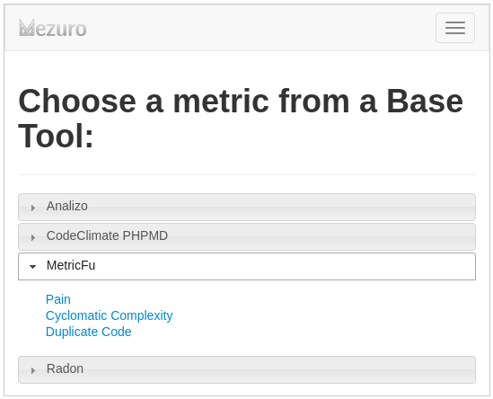
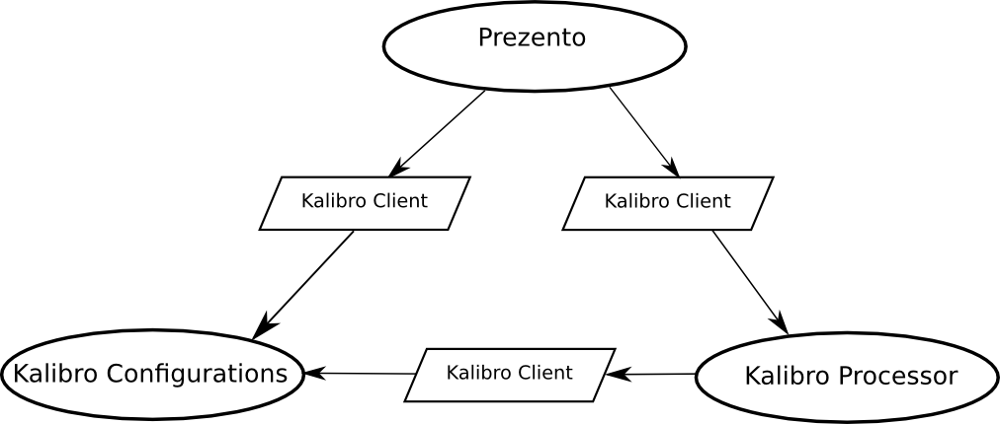

Your browser doesn't support the features required by impress.js, so you are presented with a simplified version of this presentation.
For the best experience please use the latest Chrome,Safari or Firefox browser.
Mezuro: Understanding source code metrics

Metric collectors...
Metric platforms...
What is Mezuro?
Philosofies

Why Mezuro?
example: New Metric Configuration
* Configuration clone is a way to quick start Mezuro usage

Mezuro Architecture
Mezuro Architecture

Next Steps
Use a spacebar or arrow keys to navigate